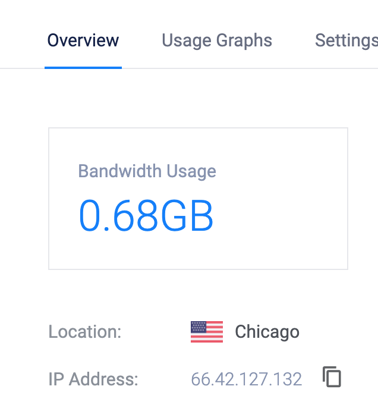

1. Buy a domain
I used Porkbun, very easy to use. They also come with easy to use WHOIS protection, which is a big plus.
2. Buy a pre-pay VPS
I do not want to put a line of credit on big cloud names and I am not wizard enough to magic myself my own vps on my own hardware (...yet) with a stable IP. But we'll get there.
I got the lowest cost compute instance over at Vultr for about $5/month. Once you go through this and get an instance, you must ssh into it with vultr's docs.
3. Find your IP4 address
Once your instance is created, it will have an ip4 address ready to go. You will want to copy this and head back to porkbun.

4. Update Porkbun DNS
Once in Porkbun Portal,
look for your domain name, and click on its Details.
What expands below is a lot of config options.
Find the ever so tiny button next to the words DNS Records.

4.1. Ensure 2 A records
Take your IP from vultr and make sure there are 2 A records, both pointing to the ip address.
- Have one for your domain
- And have another for
www. - Both answer sections should be your vultr ip4 address
5. SSH time
Now we need to get on the box, so take your IP address and follow the ssh instructions from vultr to get in. You can either wait for your DNS records to propogate (will likely take 10 minutes or so), or directly use the ip address.
Please follow these instructions at Vultr
I have made an alis in my ~/.bash_profile
ssh-blog() { ssh "root@$YOUR_DOMAIN_NAME"; }
You'll know your done once you can ssh without putting in your password.
6. Install nginx and ssl
There are lots of ways to do this part, but I went a simple route
- SSH onto the machine
- Follow install instructions for nginx and validate it works with regular http
- Do a quick check and go to Â
http://your-domain
- Do a quick check and go to Â
- Using Certbot but with better docs for ubuntu and apt
sudo apt install certbot python3-certbot-nginx -y sudo certbot --nginx -d $YOUR_DOMAIN_NAME -d www.$YOUR_DOMAIN_NAME service restart nginx
- Now try going back to your site, but this time use
https://
7. Deploying your site
I just opted to build my blog using multiple trials of tech, writing my own, and now astro. I needed VPS because I am going to write demo apps for people to log into and expose as portfolio and honestly any other idea I could have. Vultr has great instance setups, so I can skip docker if I need to, or use it to my advantage.
7.1. Just install rsync
Somehow, someway, and always eventually, you must install rsync. Its really not that bad but install can take a second depending on your situation.
This is totally dependent, but I have an ancient Intel MacBook Pro, so I had to use a painfully slow brew install rsync. During that install time, I was having second thoughts thanks to Apple not supporting their old hardware OS updates. Anyways, I can't really link anything for you here, I recommend surfing the web for your situation.
7.2. Bash time
#!/usr/bin/env bash export LE_BLOG=~/projects/le-blog/ export LE_BLOG_TARGET=/var/www/html _.blog.sync.watch() { fswatch -o $LE_BLOG | while read; do _.blog.sync done; } _.blog.sync() { rsync \ --include index.html \ --include dist/ \ --exclude node_modules/ \ --exclude .git/ \ --progress \ -avz \ $LE_BLOG root@hafley.codes:$LE_BLOG_TARGET }